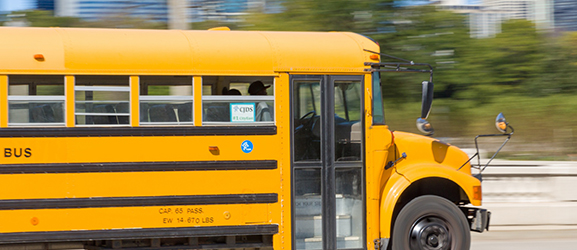

Sports
You do not have to be an athlete to get into college. Indeed, for a very small segment of the high school population, excelling in a sport, and thus being recruited to participate in intercollegiate sports, can and does translate into fantastic college opportunities, including, in some cases, scholarships.Students do not have to shy away from detailing these experiences and what they learned from them — they just have to shift the lens, add another layer, or approach these topics from creative perspectives to make them both original and reflective of a greater range of interests and talents. For example, maybe your experience diving for the ball as a volleyball player allowed you to take a risk in applying for the job of your dreams. Perhaps the qualities needed to be a good basketball player and also the skills needed to command a boardroom
Canteen

The objective of the Canteen and meal service is to protect by reducing the risk of foodborne illness, with proper sanitary conditions, and preventing adulterated food. From the very beginning, the College Canteen has been functioning efficiently.The College canteen also caters to the functions organized in the college programmes like seminars, conferences and workshops.Kitchen staff takes care to provide the students and staff a nutritious and hygienic food at our campus canteens. A variety of hygienic food and snack items includes South and North Indian Meals, Variety Rice’s Chinese Foods Fresh Juices, etc.It has spacious & properly maintained room as well as kitchen; generally the college provides it to any individual on contract basis after proper official’s formalities.. Whether it is breakfast, lunch, a quick snack or a cup of coffee, the canteen is where you need to head. Conveniently located in the college quadrangle and just outside the main gate, the two canteens are easily accessible to staff and visitors as well. It is a pleasant sight to see students spread out across the quadrangle, enjoying their food in groups.
Transport
A full fledged Transport department functions in the college with buses to provide transport facility to students and staff from various places. This service is offered ensuring a hassle-free and safe transportation.Besides the regular scheduled trips, the facility is extened for occassions after college hours likeSpecial Coaching Classes, NSS Camps, Hospitals , Placemet and Trainings.Every student is expected to avail the transport facility to enable him/her to be punctual to the college.Maintain strict discipline while traveling in the bus. Keep vigil over the senior students during the beginning of the year (after the first year classes are started) to prevent ragging in the bus. Any incident of ragging must be brought to the notice of concerned persons.Periodically check the students ID card to ensure that the students are traveling in the bus route allotted to them. In case of a need to go by a different route for any genuine reason, the student may be given permission.he staff in-charge of the buses (one teaching and one supporting) ensure the smooth functioning of the buses. The Transport committee meets once in Six months.
Health Center

The Health Centre functions to provide immediate medicinal and first aid to all students and staff if the situation arises. The Health Centre is well equipped with respect to the availability of basic health related facilities like thermometer, sterilizer, auto-clave, dressing drum, weight measuring machine, B. P. Apparatus, patient bed and stretcher etc.Regular Health Checkup camps are organized with active support from hospitals and Medical Colleges in the city.In case of complications, the patients are referred to nearby nursery home or hospitals.Transportation is ready 24×7 for students’ care.The demands on health centers are greater and more complex than ever. More students today come to campus with significant health needs, including mental health challenges.Health centers also get involved in headline-making issues of campus safety. All of these demands are converging at a time when health-care providers and society in general are increasingly aware of the value of prevention and healthy lifestyles. The mission of health centers is being redefined to include not just treating medical problems but also managing serious chronic conditions and promoting healthy habits.
Wifi

The entire campus is Wi-fi enabled with high speed internet connection to allow the students to access the internet no-matter wherever they are. The coverage is not just limited to the classrooms, instead it extends to all the facilities within the campus premises. Staff and Students are informed to utilize the Wi-Fi Facility by Registering their i-connect devices for the active usage of the facility.This includes Internet Facilities available through leased line and Wi-Fi for providing continuous and uninterrupted internet connectivity to students and faculty members. These facilities are also available to students beyond college hours for preparation of seminars & projects and research-orientated work. The entire campus including the hostels is Wi-Fi enabled and students can access the internet on their laptops round the clock.We have local area wireless technology which allows an electronic device to exchange data or connect to internet using 12MBPS in our college campus and in UG and PG hostel.